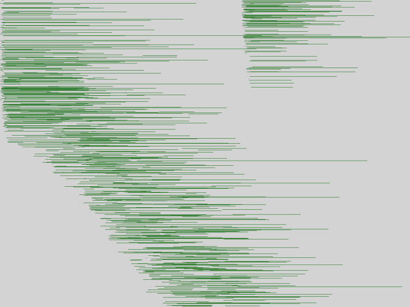

Capillaries: notes
2023-11-15
Capillaries: ARK portfolio performance calculation at scale
The rationale
In the end of the day, using any piece of technology is about saving money. This document is an attempt to estimate the potential costs of implementing a Capillaries-based solution for portfolio performance calculation. It mostly focuses on scalability aspects, while all calculation details have been covered already in that blog post.
This test give a realistic estimate of time and money an organization may need to allocate to produce portfolio performance results from raw data files, assuming that obtaining stock price for a specific date takes zero time and resources (involved stock quotes for 2020-2021 are hardcoded in the Python script that calculates portfolio performance).
All AWS provisioning tasks were performed using Capillaries cloud deployment toolkit. The code for preparing test data is in test/code/porfolio/bigtest, configuration data is in test/data/cfg/portfolio_bigtest.
Numbers and charts
The following tables and charts tell the story of 3 AWS-based test environments running the same portfolio_bigtest script against the same raw data set:
- 996 accounts stored in one 4kb Parquet file
- 14,683,696 transactions stored in 500 4-6kb Parquet files
- 713,800 end-of-month holding records stored in 10 4-6kb Parquet files
The charts show Prometheus statistics for all 3 environments. Top graph is CPU usage, bottom graph is Cassandra writes/s. Open graphs in a separate browser tab to enlarge them.
4 x c6a.8xlarge Cassandra cluster (128 cores)
| Flavor | Cores | RAM | Hourly USD | Qty | Hourly rate x qty | Total cores | Total RAM | |
|---|---|---|---|---|---|---|---|---|
| Prometheus | t2.micro | 1 | 1 | 0.0116 | 1 | $0.0116 | 1 | 1 |
| RabbitMQ | t2.micro | 1 | 1 | 0.0116 | 1 | $0.0116 | 1 | 1 |
| Bastion | c6a.large | 2 | 4 | 0.0765 | 1 | $0.0765 | 2 | 4 |
| Cassandra | c6a.8xlarge | 32 | 64 | 1.224 | 4 | $4.8960 | 128 | 256 |
| Daemon (24 workers, 16 writers) |
c6a.4xlarge | 16 | 32 | 0.612 | 4 | $2.4480 | 64 | 128 |
| Total | 11 | $7.4437 | 196 | 390 |
| Run times (sec) | 205,205,221 |
| Avg run time (sec) | 210 |
| Avg cost of run | $0.4349 |
| Cost of setup (10 min) | $1.2406 |
8 x c6a.8xlarge Cassandra cluster (256 cores)
| Flavor | Cores | RAM | Hourly USD | Qty | Hourly rate x qty | Total cores | Total RAM | |
|---|---|---|---|---|---|---|---|---|
| Prometheus | t2.micro | 1 | 1 | 0.0116 | 1 | $0.0116 | 1 | 1 |
| RabbitMQ | t2.micro | 1 | 1 | 0.0116 | 1 | $0.0116 | 1 | 1 |
| Bastion | c6a.large | 2 | 4 | 0.0765 | 1 | $0.0765 | 2 | 4 |
| Cassandra | c6a.8xlarge | 32 | 64 | 1.224 | 8 | $9.7920 | 256 | 512 |
| Daemon (24 workers, 16 writers) | c6a.4xlarge | 16 | 32 | 0.612 | 8 | $4.8960 | 128 | 256 |
| Total | 19 | $14.7877 | 388 | 774 |
| Run times (sec) | 135,126,126 |
| Avg run time (sec) | 129 |
| Avg cost of run | $0.5299 |
| Cost of setup (10 min) | $2.4646 |
16 x c6a.8xlarge Cassandra cluster (512 cores)
| Flavor | Cores | RAM | Hourly USD | Qty | Hourly rate x qty | Total cores | Total RAM | |
|---|---|---|---|---|---|---|---|---|
| Prometheus | t2.micro | 1 | 1 | 0.0116 | 1 | $0.0116 | 1 | 1 |
| RabbitMQ | t2.micro | 1 | 1 | 0.0116 | 1 | $0.0116 | 1 | 1 |
| Bastion | c6a.large | 2 | 4 | 0.0765 | 1 | $0.0765 | 2 | 4 |
| Cassandra | c6a.8xlarge | 32 | 64 | 1.224 | 16 | $19.5840 | 512 | 1024 |
| Daemon (24 workers, 16 writers) |
c6a.4xlarge | 16 | 32 | 0.612 | 16 | $9.7920 | 256 | 512 |
| Total | 35 | $29.4757 | 772 | 1542 |
| Run times (sec) | 89,99,93,91,93 |
| Avg run time (sec) | 93 |
| Avg cost of run | $0.7615 |
| Cost of setup (10 min) | $4.9126 |
There are a few distinctive areas on each scenario graph
ETL: load transactions
This is the plateau in the beginning. Daemons with 64, 128, or 256 total cores load 500 parquet files with 14 million transactions. Cassandra nodes are at ~90%, daemon instances at 50-60%. Also, account and holding data is loaded, but the amounts are a few orders of magnitude smaller, they can be ignored.
Cassandra writes per second are at 300K, 650K, 1.35m
Joins: for each account, all correspondent transactions are combined into a single JSON string
This is where the CPU usage drops, details discussed below. Writes are very few.
Python calculations
Daemon instances are at 100% CPU running Python code for portfolio performance calculation for 996 JSON strings. Database activity is almost zero.
Producing summaries
Daemon instances produce totals, CPU usage 40-90%. Database activity at minimum.
Cassandra tokens and CPU usage patterns
Why can't we have 100% CPU usage when we do joins?
All 3 runs of the 8-node scenario were web-scraped and saved here. Let's take a closer look at the step 2_account_txns_outer in run 3. Its execution timeline is below. Open it in a separate browser tab, zoom in to see individual lines and move mouse pointer over them to see batch number and execution time - the longer the execution takes, the longer the line:
Some lines are merely points - execution took only a fraction of a second. Let's get the numbers by looking for "read 0:", "read: 1", "read: 2", "read: 3", "read: 4", "read: 5", and "read: 6" on the batch history page:
- batches with 0 items: 363 occurrences
- batches with 1 item: 367 occurrences
- batches with 2 items: 203 occurrences
- batches with 3 items: 51 occurrences
- batches with 4 items: 10 occurrences
- batches with 5 items: 6 occurrences
- batches with 6 items: 0 occurrences
A batch with zero items means: daemon worker looked for accounts with primary key hash (Cassandra token) between lower and upper boundary for this batch, and found nothing. This batch turned out empty and no records were generated as a result. A batch with one item means there was one account with primary key hash matching batch criteria, daemon worker looked for all transactions for this account, found a few thousand and created an out put record for this account. Two items in the batch means two accounts, and so on.
There are two problems here.
1. A few "heavy" batches
Each of those 51*3 + 10*4 + 6*5 = 223 "heavy" batches with 3,4 and 5 items (accounts) is processed as a single atomic task by Capillaries daemon workers. So, in our stress test environment, daemon threads that end up processing batches with 0,1, or 2 items finish their job early and have nothing to do, while those processing batches with 3,4, and 5 items keep working for a much longer time. In a real production environment, those "light-weighted" 1,2,3-item threads would be busy with other tasks created by other Capillaries scripts (maybe unrelated to porfolio performance calculation). But in our scenario, they just do nothing, driving our overall CPU usage down.
2. A lot of empty batches
About a third of the batches ends up with no accounts in them. When processing a batch like this, daemon worker thread queries the database for the account data, waits for the result, receives empty dataset and declares the batch complete. No actual join is performed.
Let's generalize our findings. The test works with 996 accounts, and the number of batches specified for 2_account_txns_outer by the script is 1000:
"2_account_txns_outer": {
"type": "table_lookup_table",
"desc": "...",
"r": {
"table": "accounts",
"expected_batches_total": 1000
},
...
}
Let's calculate the theoretical probability of a batch (it's also convenient to call it a bucket as they do in computer science) receiving a specified amount of items uniformely distributed across the domain. We will do that for 100, 1000 (our case), and 10000 buckets. We can do that with a simple Python program.
The output is below. As you can see, our findings for the 1000-bucket item distribution match the theoretical numbers produced by this Python program pretty closely - those "heavy" buckets/batches are highlighted:
100 buckets, 996 items (Poisson λ=9.96)
0-item buckets: 0.004, P=0.0000449, 0.00449%
1-item buckets: 0.045, P=0.0004521, 0.04521%
2-item buckets: 0.227, P=0.0022721, 0.22721%
3-item buckets: 0.760, P=0.0076044, 0.76044%
4-item buckets: 1.907, P=0.0190686, 1.90686%
5-item buckets: 3.821, P=0.0382143, 3.82143%
6-item buckets: 6.375, P=0.0637549, 6.37549%
7-item buckets: 9.108, P=0.0910784, 9.10784%
8-item buckets: 11.373, P=0.1137330, 11.37330%
9-item buckets: 12.611, P=0.1261147, 12.61147%
10-item buckets: 12.573, P=0.1257326, 12.57326%
11-item buckets: 11.384, P=0.1138405, 11.38405%
12-item buckets: 9.439, P=0.0943880, 9.43880%
13-item buckets: 7.217, P=0.0721661, 7.21661%
14-item buckets: 5.118, P=0.0511827, 5.11827%
15-item buckets: 3.385, P=0.0338461, 3.38461%
16-item buckets: 2.096, P=0.0209615, 2.09615%
17-item buckets: 1.221, P=0.0122057, 1.22057%
18-item buckets: 0.671, P=0.0067056, 0.67056%
19-item buckets: 0.349, P=0.0034865, 0.34865%
1000 buckets, 996 items (Poisson λ=0.996)
0-item buckets: 369.170, P=0.3691699, 36.91699%
1-item buckets: 368.061, P=0.3680613, 36.80613%
2-item buckets: 183.294, P=0.1832938, 18.32938%
3-item buckets: 60.792, P=0.0607921, 6.07921%
4-item buckets: 15.107, P=0.0151068, 1.51068%
5-item buckets: 3.000, P=0.0030002, 0.30002%
6-item buckets: 0.496, P=0.0004960, 0.04960%
7-item buckets: 0.070, P=0.0000702, 0.00702%
8-item buckets: 0.009, P=0.0000087, 0.00087%
9-item buckets: 0.001, P=0.0000010, 0.00010%
10-item buckets: 0.000, P=0.0000001, 0.00001%
11-item buckets: 0.000, P=0.0000000, 0.00000%
12-item buckets: 0.000, P=0.0000000, 0.00000%
13-item buckets: 0.000, P=0.0000000, 0.00000%
14-item buckets: 0.000, P=0.0000000, 0.00000%
15-item buckets: 0.000, P=0.0000000, 0.00000%
16-item buckets: 0.000, P=0.0000000, 0.00000%
17-item buckets: 0.000, P=0.0000000, 0.00000%
18-item buckets: 0.000, P=0.0000000, 0.00000%
19-item buckets: 0.000, P=0.0000000, 0.00000%
10000 buckets, 996 items (Poisson λ=0.0996)
0-item buckets: 9051.949, P=0.9051949, 90.51949%
1-item buckets: 901.664, P=0.0901664, 9.01664%
2-item buckets: 44.862, P=0.0044862, 0.44862%
3-item buckets: 1.487, P=0.0001487, 0.01487%
4-item buckets: 0.037, P=0.0000037, 0.00037%
5-item buckets: 0.001, P=0.0000001, 0.00001%
6-item buckets: 0.000, P=0.0000000, 0.00000%
7-item buckets: 0.000, P=0.0000000, 0.00000%
8-item buckets: 0.000, P=0.0000000, 0.00000%
9-item buckets: 0.000, P=0.0000000, 0.00000%
10-item buckets: 0.000, P=0.0000000, 0.00000%
11-item buckets: 0.000, P=0.0000000, 0.00000%
12-item buckets: 0.000, P=0.0000000, 0.00000%
13-item buckets: 0.000, P=0.0000000, 0.00000%
14-item buckets: 0.000, P=0.0000000, 0.00000%
15-item buckets: 0.000, P=0.0000000, 0.00000%
16-item buckets: 0.000, P=0.0000000, 0.00000%
17-item buckets: 0.000, P=0.0000000, 0.00000%
18-item buckets: 0.000, P=0.0000000, 0.00000%
19-item buckets: 0.000, P=0.0000000, 0.00000%
If we want to minimize the probability of getting batches with 3 and more items, we have to substantially increase the number of batches. And we have to pay for that with CPU, network, queue and database resources spent on empty batches (for example, ~90% of the batches are empty if 996-items are spread among 10000-batches). And remember: it's just a probability, so there is no guarantee that those "heavy" batches do not occur once in a while.
For example, CPU usage pattern doesn't change much even when the number of batches is 10000, and we get these frequencies:
- batches with 0 items: 9052 occurrences
- batches with 1 item: 901 occurrences
- batches with 2 items: 46 occurrences
- batches with 3 items: 3 occurrences
The 2_account_txns_outer 10000-batch execution timeline answers the question why CPU usage on this step is still around 40% (open this link in a separate tab and zoom in to the maximum): for 90% of the batches, daemon worker thread just queries Cassandra for the account info, waits for the result, finds nothing and declares the batch processed. Perhaps, if the network+database latency was lower, daemon worker threads would be busier.
{kind=link}
Bonus chapter: Poisson distribution
The challenge we are facing here is very well-known among hash table implementers: when a bucket in a hash table receives too many items (the word collisionsis used) the implementation should resolve them without allowing hash table performance to degrade to O(n). Hash table developers know: when the number of items and buckets is large, the frequency of items in buckets follows a Poisson distribution. This helps them choose proper parameters for their implementations.
We can forget about the Python program above, and estimate the number of items in a bucket using this graph for 100 (green), 1000 (red) and 10000 (blue) buckets (same color scheme as Python program output above). This graph engine doesn't allow greeks, so a, b and c were used instead of Poisson distribution λ:
From the graph: larger number of buckets (smaller λ in Poisson distribution) leads to more empty buckets and fewer buckets with item count > 1. Otherwise, setups with a smaller number of buckets get us very few empty buckets, but a lot of "heavy" buckets. Both empty and "heavy" buckets are bad if we want to get 100% CPU usage. Pick your poison.
One of the most critical statistics for hash tables is "load factor": the number of entries occupied in the hash table divided by is the number of buckets. In our case, it's 996/1000=0.996. And this is the λ in Poisson distribution formula. Acceptable figures of hash table load factor range around 0.6 to 0.75 (a lot of empty buckets and a suppressed "tail" of the Poisson distribution curve). To keep load factor within this range, hash table implementation may use re-hashing techniques that change the number of buckets.
Can we do something like that in Capillaries? For example, we could create buckets (batches) of different sizes to spread items evenly across buckets. But that would require an extra pre-run against all items in Cassandra table, and it probably has be an atomic operation, therefore not scalable. Another potential soulution would be using some low-latency techniques (like Redis counters) for marking empty batches: 1_read_accounts step marks empty batches, and 2_account_txns_outer declares them complete without the costly Cassandra roundrip. A potential Capillaries improvement to think about.